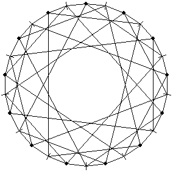

M13
A puzzle by J. H. Conway based on PG(2,3),
brought to life by S. Egner, 1997.
The puzzle...
In a recent paper,
John H. Conway describes the beautiful construction of a discrete
mathematical structure which he calls "M13".
This structure is a set of 1235520 permutations of 13 letters.
It is not a group.
However, this structure represents the answer to
the following group theoretic question:
Why do the simple groups
M12
and
L3(3)
share some subgroup structure?
In fact, both the Mathieu group M12 and the
automorphism group L3(3) of the projective plane
PG(2,3) over GF(3) can be found as subsets of
M13.
In addition, M13 is 6-fold transitive, in the
sense that it contains enough permutations to map any
two 6-tuples made from the thirteen letters into each other.
In this sense, M13 could pass as
a parent for both M12 and L3(3).
As it is known from the classification of primitive
groups that there is no finite group which
qualifies as a parent in this sense.
Yet, M13 comes close to being a group.
To understand the definition of M13 let
us have a look at the projective geometry PG(2,3).
This structure can be thought of as the set of one-dimensional
subspaces of the 3-dimensional vector space GF(3)3.
There are thirteen such one-dimensional spaces, say
PG(2,3) =
{GF(3) u1, .., GF(3) u13}.
These objects are called the points of the
geometry PG(2,3).
Now we form certain sets of points which we
call the lines of the geometry.
To do this take a non-zero v in GF(3)3
and form the set
Lv = { GF(3) u in PG(2,3) | u . v = 0 }.
There are thirteen lines,
{L1, .., L13},
each of which contains four points.
The points and the lines and the "is-contained-in" relation form
an incidence structure over PG(2,3).
This incidence structure forms the basis of the puzzle:

The tick marks around the circle represent the
26 objects of the incidence structure:
13 points and 13 lines.
The points are indicated as small disks,
the lines are indicated as small strokes.
There is an edge from a line to a point
if and only if the point is an
element of the line,
in the sense of the projective geometry PG(2,3).
The puzzle M13 now works as follows:
Place twelve counters labeled "1", .., "12" onto
twelve of the points.
The last point remains free,
it carries the "hole".
An elementary move consists of three steps:
- Move a counter along an edge to a line.
- From there move the counter to the unoccupied point.
- Finally, exchange the two counters which occupy the other two
points of the same line.
Hence, any elementary move takes a counter into
the hole and simulataneously exchanges two other
counters, specified by the incidence structure
of the projective geometry PG(2,3).
The structure M13 is the set
of all states of the puzzle which are reachable by
elementary moves from a fixed initial state.
Hence, M13 is a set of permutations
of twelve counters and a hole.
Taken as a puzzle, the aim is to restore
the initial state from a given one with a sequence
of elementary moves.
In this sense, the puzzle is much like the
famous
15-puzzle
by Sam Loyd.
...the Java Applet
The Java Applet class M13 is an interactive implementation
of the abstract puzzle defined by J. H. Conway.
Clicking on the coloured counters will move them
into the hole.
The speed of the motion can be controlled with the
slider below.
In addition, there are four buttons:
- "Scramble" does about 1000..2000 pseudo random
moves to place the puzzle into an unpredictable state.
- "Reset" restores the initial state instantaneously.
- "Stop" ends the current move immediately.
- "Solve" performs a sequence of moves which
eventually restore the initial state.
The source code of the applet consists of 1.5k lines
of Java-code,
a third of which implements the visual appearance,
another third implements the dynamics and
the remaining third provides the "solve" function.
The most interesting part of the code is the
solution alogorithm.
Since M13 contains about
1.2M states it would have been possible to store
an optimal solution for each of them:
For any state only the first move of the solution
must be stored and
a move fits into 4 bits.
This leaves us with a hypothetical hash
table of 600k bytes.
The implementation here does not
follow this brute force approach.
Instead, the structure of the
M13
is being used.
The set M13 contains
13.12.11.10.9.8 = 1235520 permutations of
13 letters.
This set is the disjoint union of 13 cosets
of the group M12
of order 12.11.10.9.8 = 95040 in the
group S13.
Every coset is characterized as the set
of states where the "hole" is
at a fixed point.
A single move can take the hole to
any other point,
so the cosets are connected by
words (in the elementary moves)
of length one.
In addition, there are 12.(12-3) = 108
words of the form "x y x",
called triangle moves,
which render the hole where it was before.
Here, x and y are the labels of the
counters to move into the hole.
Since "x y x" and "y x y" have identical
effect, the triangle moves produce
108/2 = 54 permutations which generate
M12.
Thus, the problem of solving
M13 has
been reduced to
1. moving the hole to its initial position
with a single elementary move and
2. finding a word in the possible
54 triangle moves to permute the twelve
counters.
The second step of the solution algorithm
is a standard task in computational
group theory:
Given a finite set S of permutations and
an element x of the permutation group
generated by S,
factorize x into a word in S.
In our case, S is the set of permutations
induced by the 54 triangle moves and
x is the permutation necessary to sort
the 12 counters into their
initial position.
The standard method to solve this
"permutation group element factorization problem"
is to use an abstract stabilizer chain.
The abstract stabilizer chain which is used
in the Java program has been computed with a
program by Sebastian Egner and Markus Püschel
written in 1996.
The program is implemented in
GAP v3.4.
It used 4 hours of computing time on a
SUN UltraSPARC station to find a heuristically
good base, a stabilizer chain, and an abstract
stabilizer chain containing short words.
Here is a summary of the abstract stabilizer chain
as produced by the program of SE and MP:
ASC(
# level basepoint cosets (orbit size) (max. length) (avg. length)
# 1 12 12 12+ 1 0.9
# 2 2 11 11+ 2 1.0
# 3 9 10 10+ 2 1.3
# 4 7 9 9+ 3 1.8
# 5 13 8 8+ 4 2.8
#
# total: 50 50* 12 7.9
# (orbits: + = complete, * = generating set known)
)
The (max. length) column contains the length of the largest
word for a transversal element on that level.
The (avg. length) reports the arithmetic average of the
lengths of all words for the transversal elements chosen.
This information shows an upper bound of 1+3*12 = 37
elementary moves to solve M13.
Using heuristic improvements we arrive at about 2/3 of the
avg. length, giving 16 elementary moves in nearly all cases.
(This is an experience with similar puzzles.)
Reference
-
J. H. Conway: M13.
in R. A. Bailey (ed.): Surveys in Combinatorics, 1997
London Math. Soc. Lect. Note Series 241 (1997).
-
G. Butler: Fundamental Algorithms for Permutation Groups.
Lect. Notes in Comp. Sci. 559 (1991), Springer-Verlag.